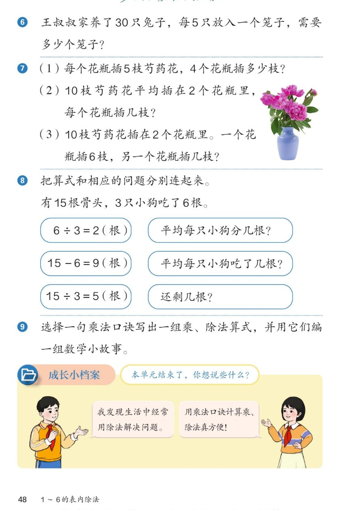

🔊 1~6的表内除法 · 课本第 48 页 · 练一练 6~9 与成长小档案
人教版《数学》二年级上册 · 有声图文带读 · 先想后看解析 · 本单元最后一页
题数
6
认知
2
强化
3
拓展
1
本页重点
除法应用 · 连线配问题 · 编数学小故事 · 单元总结
🎧 分两步学：
① 解析教材图片
——纯声音读图，读到哪一块哪一块闪动提示；关键处先倒计时让你思考，再在图片下方给出解析并朗读。
② 分层提问练习
——六道分层题（认知 / 强化 / 拓展），先思考再展开解析、朗读参考答案；这一步不再回到图片。
也可以随时点任意一句话、图上任意一块单独听；点课本文字卡还会展开答案。
教材图片（点块听读，读到哪块哪块闪）

📖 人教版《数学》二年级上册 · 课本第 48 页 · 图片仅供个人学习，版权归人民教育出版社所有
🤔 想一想（点我可跳过）
课本的文字（点句子：听读 + 看答案）
第 6、7 题
兔子进笼 + 芍药花三问
看答案 ▾
第 6 题：
30÷5＝6（个）
笼子；
第 7 题：(1)
5×4＝20（枝）
；(2)
10÷2＝5（枝）
；(3)
10−6＝4（枝）
。
🌈 (2)是平均分用除法，(3)是求另一部分用减法
第 8 题
算式与问题连线
看答案 ▾
6÷3＝2（根）
→ 平均每只小狗
吃了
几根（吃掉的 6 根平均分）；
15−6＝9（根）
→
还剩
几根；
15÷3＝5（根）
→ 15 根平均分给 3 只，每只
分
几根。
第 9 题
选口诀写算式 + 编数学小故事
看答案 ▾
口诀
三五十五
：
3×5＝15、5×3＝15、15÷3＝5、15÷5＝3
；
小故事：5 个小朋友栽 15 棵树，平均每人栽 3 棵（15÷5＝3）；
15 棵树每 3 棵一排，能栽 5 排（15÷3＝5）。
成长小档案
本单元结束了，你想说些什么？
看答案 ▾
① 我发现
生活中经常用除法
解决问题；
② 用
乘法口诀
计算乘、除法真方便！
你也可以写写自己学会的本领和还想弄懂的问题。
分层提问练习（先想后看解析）
🐰
认知
30 只兔子，每 5 只放一个笼子，需要几个笼子？
看解析
🤔 想一想
解析：
30÷5＝6（个）
；
求 30 里面有几个 5，口诀
五六三十
。
🌸
认知
10 枝芍药花平均插在 2 个花瓶里，每个花瓶插几枝？
看解析
🤔 想一想
解析：
10÷2＝5（枝）
；
平均分成 2 份，口诀
二五一十
。
⚖️
强化
芍药花 (2) 用除法、(3) 用减法，为什么不一样？
看解析
🤔 想一想
解析：
(2)
平均插
2 个瓶 → 求每份 → 除法
10÷2＝5（枝）
；
(3) 一个瓶插 6 枝 → 求另一部分 → 减法
10−6＝4（枝）
。
💡 "平均分"用除法，"去掉一部分求另一部分"用减法
🦴
强化
15 根骨头、3 只小狗吃了 6 根：三个算式怎么与问题连线？
看解析
🤔 想一想
解析：
6÷3＝2
：吃掉的 6 根平均分 → 每只
吃了
2 根；
15−6＝9
：总数去掉吃掉的 →
还剩
9 根；
15÷3＝5
：15 根平均分给 3 只 → 每只
分
5 根。
💡 连线先想"算式算的是什么"，再配问题
🤔
强化
"15÷3"和"15−6"都和骨头有关，它们有什么区别？
看解析
🤔 想一想
解析：
15÷3＝5
：
平均分
，每只小狗分 5 根；
15−6＝9
：
求剩余
，吃掉 6 根后还剩 9 根。
💡 平均分→除法；求剩下→减法
🌈
拓展
选一句自己的口诀，写算式并编一组数学小故事。
看解析
🤔 想一想
解析：
口诀
二四得八
：
2×4＝8、4×2＝8、8÷2＝4、8÷4＝2
；
故事：8 个橘子平均装 2 盘，每盘 4 个（8÷2＝4）；每 4 个装一盘，能装 2 盘（8÷4＝2）。
🌈 口诀是根，算式是枝，故事让数学开花
① 解析教材图片
② 分层提问练习
⏹ 停止
纯声音 + 高亮跟随 · 想好才出解析
← 返回导航